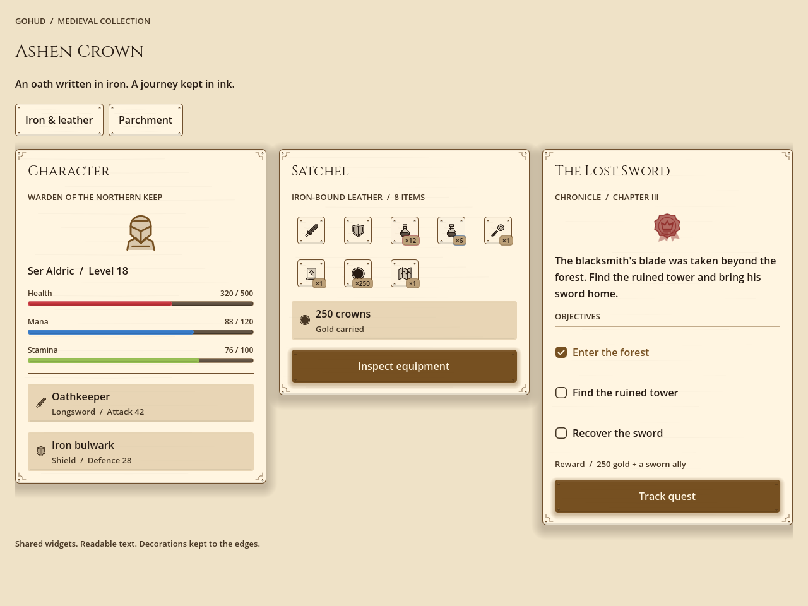

Doğrudan Button.new() çağırın; iç boşluk, yükseklik ve satır kaydırma ekrandan ekrana
hafifçe ayrışsın. Bu ayrışma kod incelemesinde görünmez, ekran görüntüsünde apaçıktır.
| Grup | Fonksiyonlar |
|---|---|
| Yapı | column row wrap_row padding spacer divider responsive_grid aspect foldable |
| Yazı | label label_key line section typography |
| Düğmeler | button button_key icon_button list_button list_row apply_icon style_choice_card style_chip_button style_chip_label |
| Girdi | line_edit textarea toggle checkbox slider picker select dropdown radio_group segmented choice_grid |
| Gösterim | card chip hud_panel chip_panel avatar skeleton alert table tabs breadcrumb progress empty_state |
| Yüzey parçaları | surface box floating disc face_padding |
| Yardımcılar | form fit_words natural_width tooltip_node card_body let_input_through |
box() her zaman bir StyleBoxFlat döndürür, çünkü çağıranlar onu alıp
bg_color veya corner_radius değerini ayarlar. Özel bir biçimin hayatta kalması
gerekiyorsa surface() kullanın.
Açıklamalı liste satırları
GoStyle.list_button(GoIconSet.SWORD, "Yemin Tutan", _inspect, Color.TRANSPARENT,
"Uzun kılıç / Saldırı 42", false)İkinci satırı olan bir satır eşit üst ve alt iç boşluk alır, tek satırlık bir satırdan ferahtır ve başlık/açıklama çifti simgenin yanında dikeyde ortalanmış kalır — bir kap satırı daha uzun hâle getirdiğinde ve açıklama birkaç satıra kaydığında da. Satırın tamamı tek bir dokunma hedefi olarak kalır.

medieval_light altında aynı fabrika çağrıları.Akan satırlar
Denetimleri wrap_row içine doğal genişlikleriyle koyun. Satır kaydırma açık bırakılırsa
bir düğmenin en küçük genişliği neredeyse hiçe iner ve satır, hücresini buna göre boyutlandırır — etiket
satır başına tek karaktere çöker. Fabrika bunu sizin yerinize engeller.
Boş bir listeyi asla boş bırakmayın
page.add_child(GoStyle.empty_state(GoIconSet.BOX, "Burada henüz bir şey yok"))İnsanlar boş bir ekranı bozuk diye okur.
Alt sınıf kancaları
Bir alt widget'ın oluşturulduğu her yer, ezilebilir bir metottan geçer; böylece gohud türlerinin alt sınıfını türeten bir proje, kendi alt sınıflarını kod kopyalamadan widget'ların içine sokabilir.
| Kanca | Widget | Varsayılan |
|---|---|---|
_make_scroll() | GoCoachMark, GoSurface | GoScroll.new() |
_make_close_button() | GoPromptCard, GoSurface | GoIconButton.new() |
_make_surface() | GoSheet, GoDialogs | GoSurface.new() |
_should_pause() | GoCoachMark | Bir modal açıkken kartı gizler |